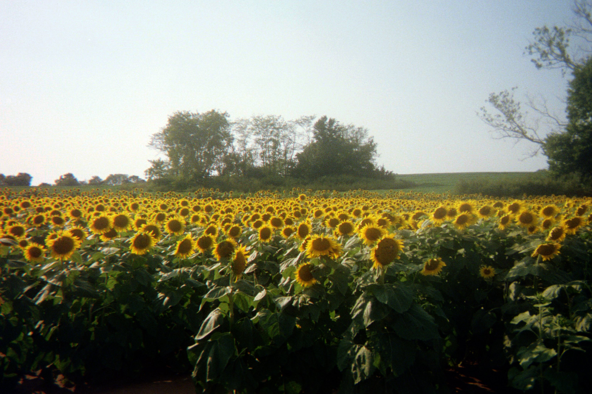

About Me:
I am a recent graduate from the University of Kansas with a degree in Atmospheric Science attending this course so I can complete my GIS Certificate there. I am searching for employment in a GIS or environmental science-based career, and am working on completing my GIS certificate to make myself more attractive to employers. I am 24 years old, born and raised in Johnson County, Kansas, and take great pride of being a resident of the Sunflower State. I work part time at a Hen House grocery store in Overland Park, KS. I am on the autism spectrum, which means that I have difficulty in social situations, and may fail to grasp some social concepts that others easily understand, but thanks to years of therapy, this does not severely hamper my ability to perform. In fact, my hyperfocus, which is a trait of autistic people, really helps me concentrate on my work, and filter out all the noise in the environment to really dive deep into what I'm doing. Years of therapy have helped me get better at social situations, but I also know that I can turn aspects of my disability into personal strengths.
 When I'm not working, I enjoy listening to old rock music (Van Halen, Led Zeppelin, and the Eagles are my favorites), browsing the web, building with LEGOs, watching cartoons like Beavis and Butthead, watching Kansas City sports (Patrick Mahomes is my favorite player on any team), and spending some time with the family cats, Katniss and Prim. I would be interested in trying out photography too one day, as shown by my picture of a sunflower field outside Lawrence, KS that I took with a film camera. I wanted to achieve a "vintage" effect, like the picture was taken in the '90s or early '00s. On the topic, I'm also interested in old or vintage stuff in general. It's fascinating to me how they used to make things.
Be sure to check out the book report I wrote on the book Flatland by Edwin A. Abbott. It contains philosophy of mapmaking and the importance of conveying information through graphics, highly relevant to geography.
Links:
Click on these links to take a look at websites I like to visit!
- University of Kansas Department of Geography and Atmospheric Science Home Page
- Kansas State University Department of Geography Home Page
- The National Weather Service
- The Storm Prediction Center
- The National Hurricane Center
- Quick-R (a cheatsheet on using the R programming language)
- The R Graph Gallery (help and inspiration on making graphs with R)
- Sports-Reference (all four major sports included)